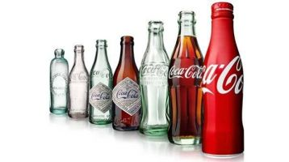
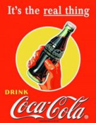

About Coca Cola

The Coca Cola beverage was invented by pharmacist John Stith Pemberton in 1886.
The formula and brand was bought in 1889 by Asa Candler who incorporated the Coca Cola Company in 1892. In 1916, the company began manufacturing its famous bottle, which remains signature shape of Coca Cola today.
In 1928, Robert Woodruff, whom was the company's president at that time, led the expansion of Coca Cola overseas when he introduced Coca Cola to the Olympic Games for the first time.

In the 1960s the company decided to expand with new flavors- Fanta, Sprite and Fresca, In addition it acquired the Minute Maid Company, adding an entirely new line of business juices to the company.
In the 1980s, a time of much change and innovation, was the introduction of Diet Coke, which become the top law-calorie drink in the world.
The company's presence worldwide was growing rapidly and year after year Coca Cola found a home in more and more places in the world. As for today, Coca Cola has grown to be the world's most ubiquitous brand, with more than 1.4 billion beverage servings sold each day.